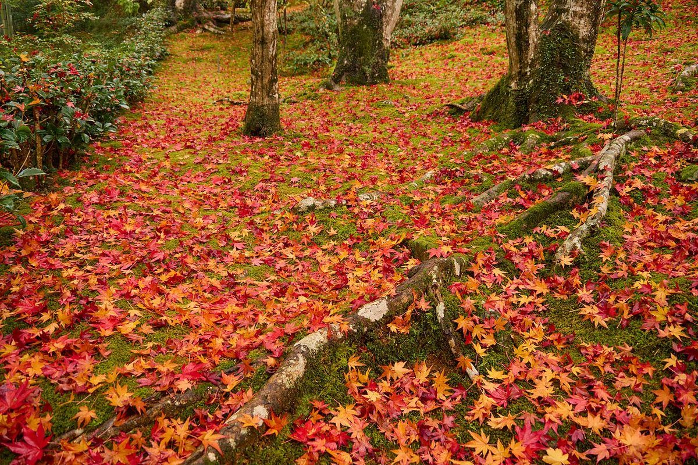
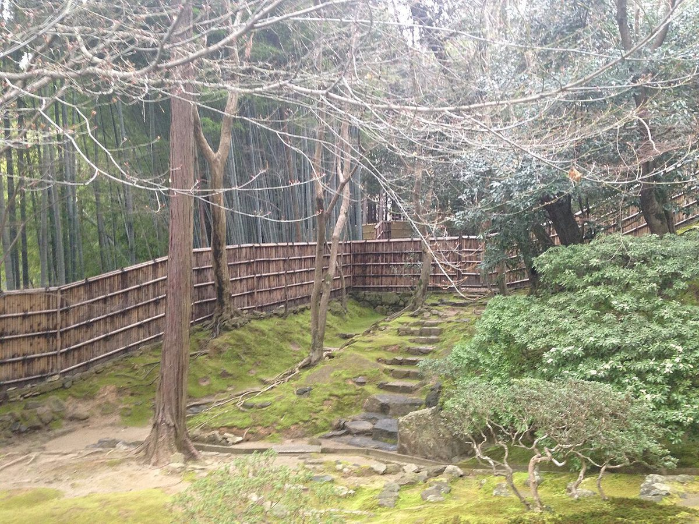
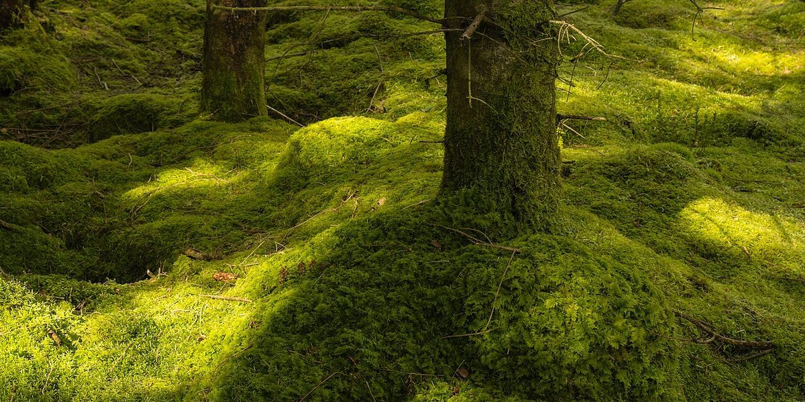

口コミ
以下は実際のお客様の声ではありません。ページのイメージをつかんでいただくための例です。
このコンセプトは制作側の案です。お店が掲げているものではありません。
掲載写真はフリー素材のイメージで、店舗の実際の様子ではありません。他地域で撮影されたもの、撮影地が不明なものを含みます。

イメージ例
一度、ゆっくり立ち寄ってみたいなと思います。

イメージ例
どんなお店なのか、ページで分かったらうれしいな。

イメージ例
営業時間や場所がすぐ分かるページだったら、友人にも教えたいと思います。
実際のご感想は、Instagramなどでご確認ください。